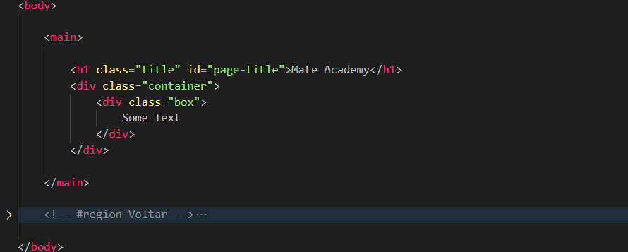
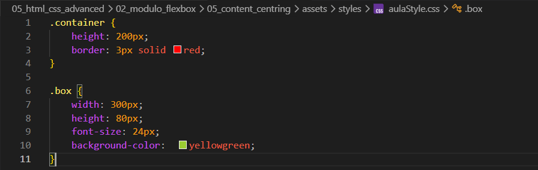
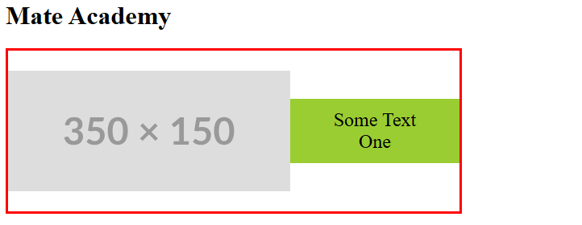

Content-centring
Intro
Aqui iremos ver sobre centralizacao de conteudo.
Aqui iremos ver sobre centralizacao de conteudo.
HTML:

CSS:

Em nosso codigo temos um container com uma div box dentro, temos como objetivo fazer com que nossa div box fique no centro de nosso container.
Se usarmos apenas um margin: auto; em nossa div box, ela ficara centralizada apenas horizontalmente, se com isso adicionarmos tambem agora um display: flex; em nosso .container, ele ficara centralizado de ambas as formas.
Porem dessa forma teriamos que adicionarmos propriedades em dois elementos diferentes. Ao inves de deixarmos um margin: auto; em nosso .box podemos fazer toda a centralizacao pelo .contaiener.
Para isso iremos adicionar alem do display: flex; tambem colocaremos um justify-content: center; e align-items: center;
Agora para podermos centralizar o texto dentro do .box podemos adicionar um text-align: center; com isso ficara centralizado horizontalmente e tambem um line-height: com mesmo tamanho da altura do elemento (80px);.
Porem dessa forma ainda nao funciona muito bem, pois se por exemplo dentro desse texto adicionarmos um < br > em seguida mais algum texto. Esse texto ira ficar fora de nosso .box isso pois cada linha de texto tem 80px.
Para corrigirmos isso tambem podemos adicionar um display: flex; em nosso .box e adicionar as propriedades: justify-content: center; e align-items: center;.
Agora iremos supor que desejamos colocar um icone ou informacao de servico em alguma imagem de conteudo, para fazermos isso iremos adicionar uma tag img de exemplo.
Com isso iremos tem uma imagem com uma caixa de texto uma ao lado da outra:

Agora iremos configurar nossa img com width: 100%; height: 100%; e object-fit: cover (para cobrir a area do elemento);. Feito isso, para que o texto nao interfira com a img iremos adicionar um position: absolute; (dentro de nosso .box) com isso teremos o texto localizado no centro
Com isso como usamos o display: flex; temos tudo centralizado corretamente. Se desejarmos deixar um espaco entre as bordas da imagem
Conteudo da aula